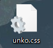
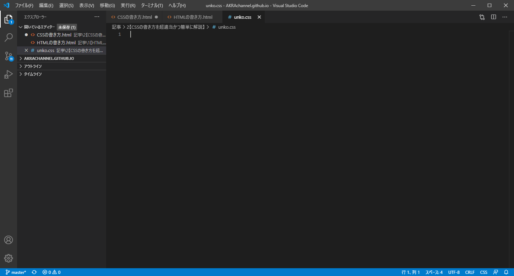
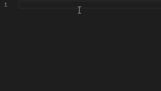
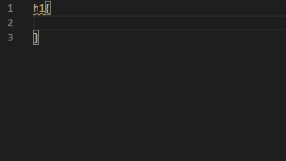
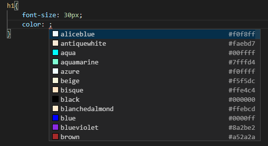
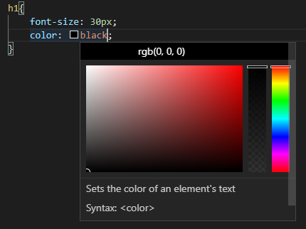
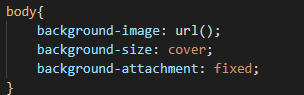
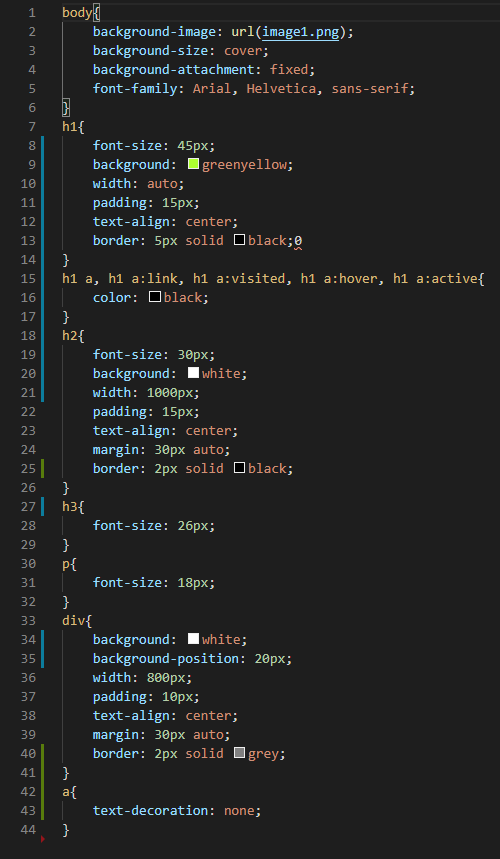

おはこんばんにちは。くうです。
前回はHTMLの書き方を簡単に説明しましたので、
今回はCSSの書き方について触れていきたいと思います。
今回も、前回同様「visual studio code」を使っていきます。
リンクなどは省きます。
CSSを書く前に、確認などをしておきたいと思います。
CSSは簡単に言うと、サイトを装飾するものです。
HTMLで文字、CSSで装飾をしてサイトを作ります。
早速ですが、解説していきます。
とは言っても簡単ですのでね...
まずはどこに書くか決めます。パターンは主に2つです。
1つは、HTMLファイルの中に書き込んでしまう方法。
2つ目は、別にCSSファイルを書いて読み込ませる方法。
ちなみにこのサイトは管理が簡単なので2つ目を使っております。
ということで今回は別にCSSファイルを書いていきたいと思います。
.CSSファイルを作って編集しましょう。
作ったファイルはvisual studio code にD&DすればOKです。


CSSを書いていきますが、基本的にどのように書いていくのかといいますと、
「タグごとに」文字の大きさ、フォント、などを設定していきます。
H1タグは〇〇、Pタグは真ん中に配置....などですね。
ではどのように書いていくのか。それを解説いたします。
まず、タグを指定します

そして今の中にフォントサイズを指定するコードなどを書いていくわけです。
実際に書いていきます。
まずh1タグ(大見出し)のフォントサイズを決めます
下のgif画像のように書き込んでください

30pxのところは自由に指定してください。
試しに色も指定してみましょう。
colorで指定すればいいと思います(間違ってたらごめんネ)

色もここから選べるようです。素晴らしい。

もっと言えば適当に色指定してカーソル合わせればもっと細かく指定できますwww｡ﾟ(ﾟ^Д^ﾟ)ﾟ｡
最後にこのサイトのようにスクロールしない背景画像をつける方法を教えます。

このように書きます。()の中には画像の名前(拡張子込み)で書いてください。
画像とCSSは同じ階層に置いておくといいですよ。
定番ではないですけどこのサイトのCSSを見せますね。

...多いですね。
ということで次回はCSSpart2行きたいと思います。
最後まで見てくれてありがとうございました！